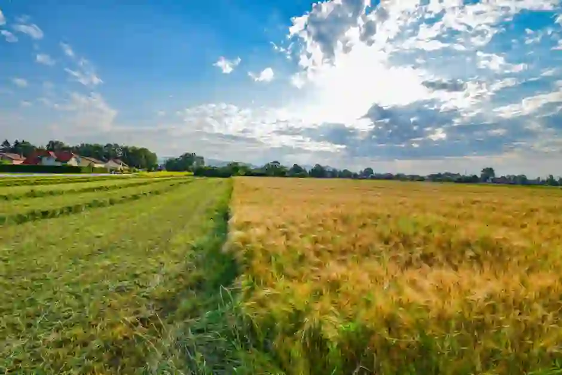
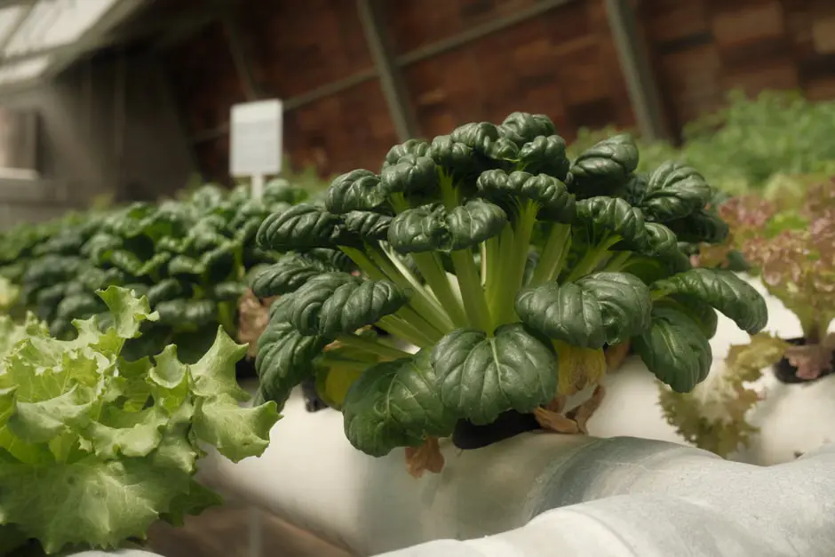
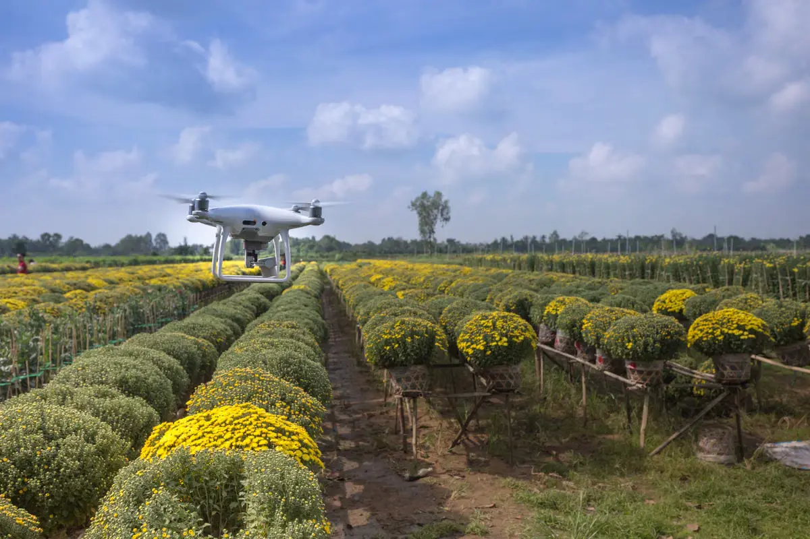
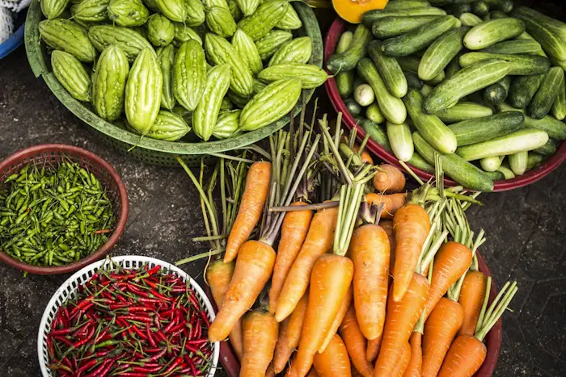
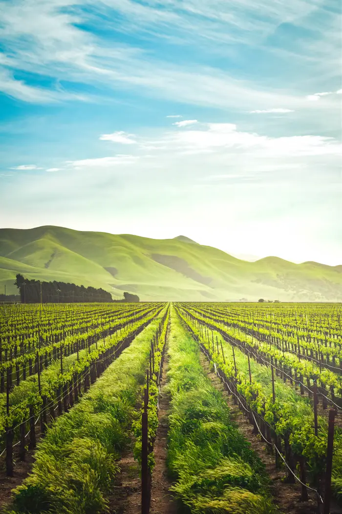

Certified Agricultural Experts
Our experienced agronomists provide professional consultation, crop planning and scientific farming guidance for every project.
From seed to shelf, we provide end-to-end agricultural solutions powered by nature and technology.

Rotational organic farming across 40+ crop varieties — grains, vegetables, legumes, and oilseeds grown in living, nutrient-rich soil.

Free-range, pasture-raised cattle and poultry with ethical, comfortable living conditions and wholesome dairy production.

Year-round climate-controlled growing with hydroponic systems that use 90% less water and zero soil degradation.

Drone monitoring, soil sensors, and AI-driven crop analytics that turn data into bigger, healthier harvests.
We combine experienced agricultural professionals, smart farming technology, sustainable practices and dedicated support to help every farmer achieve better productivity and long-term success.

Years of Agricultural Excellence
Our experienced agronomists provide professional consultation, crop planning and scientific farming guidance for every project.
AI analytics, drone monitoring and IoT sensors help maximize productivity while reducing operational costs.
Eco-friendly cultivation techniques preserve soil health while producing premium-quality crops for future generations.
Our support specialists are always available to assist farmers with technical guidance and farming solutions whenever needed.
Farms Served
Expert Agronomists
Client Satisfaction
Years Experience
A transparent, four-step journey for every harvest.
Soil analysis and crop selection tailored to season and land health.
Sensors and drones track growth, water, and pest health daily.
Hand-picked at peak ripeness, sorted and packed on-site.
On the road within hours — farm to your door in under 24.
From family-owned farms to large commercial operations, we deliver innovative agricultural solutions tailored to diverse farming industries and business needs.
High-yield cultivation solutions for wheat, rice, maize, barley and other cereal crops.
Learn MoreSustainable farming practices for seasonal vegetables with improved productivity and quality.
Learn MoreComplete orchard management including irrigation, nutrition and disease prevention.
Learn MoreEco-friendly cultivation methods using certified organic inputs and sustainable practices.
Learn MoreNutrition, healthcare and management solutions for healthy livestock and dairy production.
Learn MoreControlled-environment agriculture with smart climate and irrigation management systems.
Learn MoreSpecialized solutions for tea, coffee, rubber and spice plantation management.
Learn MoreCold-chain transportation, storage and efficient farm-to- market supply management.
Learn MoreInternational-quality production standards for global agricultural exports and trade.
Learn MoreEvery farm has unique challenges. Discover how our innovative agricultural solutions helped farmers increase productivity, reduce costs, and build sustainable futures.
We modernized irrigation, optimized soil nutrition and introduced AI crop monitoring to transform a traditional rice farm into a highly productive agricultural business.

Precision irrigation improved productivity and reduced operational costs.To pioneer a future where technology
View Story
Better crop monitoring achieved international export standards.organic farming across 40+ crop varieties
View Story
Smart greenhouse automation reduced water consumption while improving quality.
View StoryOur agricultural experts provide modern farming solutions across multiple states, helping thousands of farmers improve productivity with technology-driven services.
3,200 Farms • 120 District Projects
2,100 Farms • Smart Irrigation
980 Organic Farms
1,700 Precision Farming Projects
"The vegetables taste like they came from my grandmother's garden. Fresher than any store, and delivered the same day!"
"As a partner farm, Stackly gave us tech tools and a market we never had. Our income doubled in two years."
"The farm tour with my kids was magical. They saw where their food comes from and met the farmers. Truly special."
Everything is harvested within 24 hours of reaching your door — often the same morning. We pack on-site and ship immediately.
Yes. Every crop is grown using certified organic methods — no synthetic pesticides, only natural compost and biological pest control.
Absolutely. Harvest and Abundance members can swap items each week through their account dashboard.
We currently deliver within a 60-mile radius. Regional shipping is expanding — contact us to check your area.